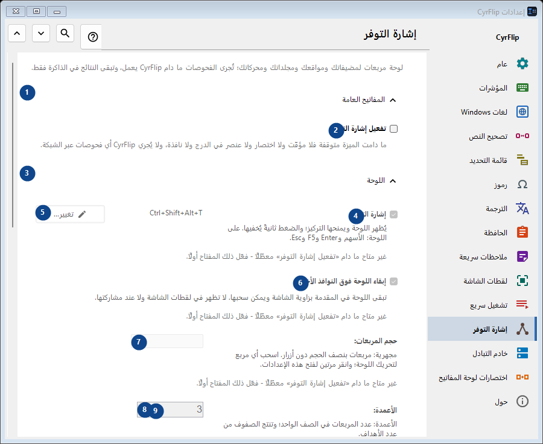
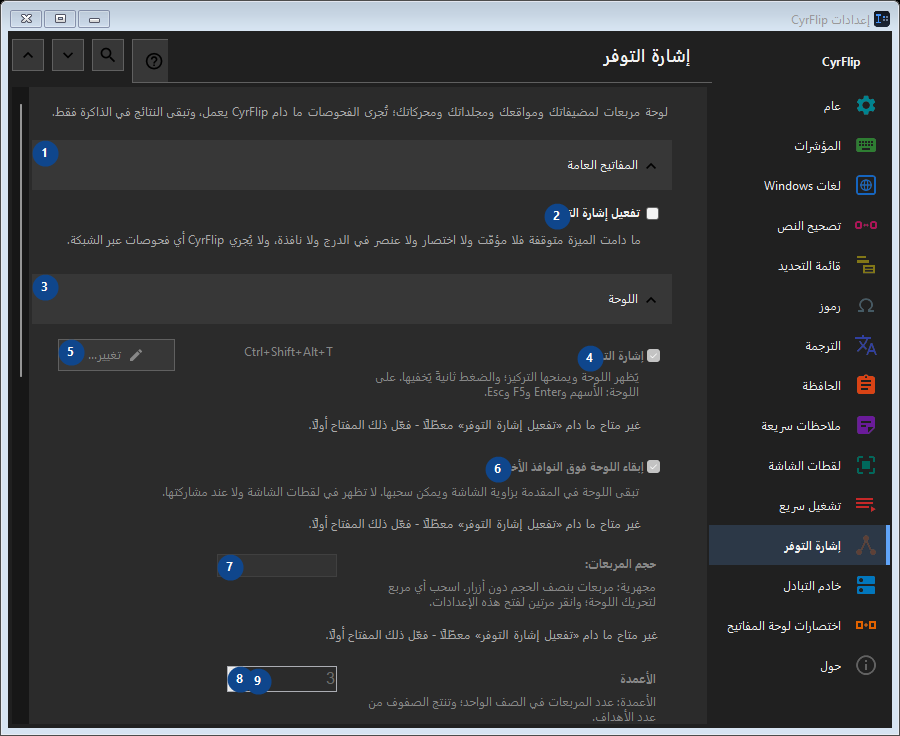

إشارة التوفر
الغرض
لوحة مربعات لمضيفاتك ومواقعك ومجلداتك ومحركاتك؛ تُجرى الفحوصات ما دام CyrFlip يعمل، وتبقى النتائج في الذاكرة فقط.


ترتيب الاستخدام
تُطبق الإعدادات فورًا. لا يوجد ترتيب إلزامي؛ استخدم المجموعات أدناه.
العناصر
1. المفاتيح العامة
استخدم هذا الأمر لتنفيذ الإجراء المذكور. اقرأ أي طلب تأكيد قبل الموافقة.
اختصاراتك2. تفعيل إشارة التوفر
ما دامت الميزة متوقفة فلا مؤقّت ولا اختصار ولا عنصر في الدرج ولا نافذة، ولا يُجري CyrFlip أي فحوصات عبر الشبكة.
اختصاراتك3. اللوحة
استخدم هذا الأمر لتنفيذ الإجراء المذكور. اقرأ أي طلب تأكيد قبل الموافقة.
اختصاراتك4. إشارة التوفر
غير متاح ما دام «تفعيل إشارة التوفر» معطّلًا - فعّل ذلك المفتاح أولًا. هذا العنصر غير متاح حاليًا. فعّل الميزة أو اختر إدخالًا أولًا.
اختصاراتك5. تغيير - إشارة التوفر
غير متاح ما دام «تفعيل إشارة التوفر» معطّلًا - فعّل ذلك المفتاح أولًا. هذا العنصر غير متاح حاليًا. فعّل الميزة أو اختر إدخالًا أولًا.
اختصاراتك6. إبقاء اللوحة فوق النوافذ الأخرى
غير متاح ما دام «تفعيل إشارة التوفر» معطّلًا - فعّل ذلك المفتاح أولًا. هذا العنصر غير متاح حاليًا. فعّل الميزة أو اختر إدخالًا أولًا.
اختصاراتك7. حجم المربعات
غير متاح ما دام «تفعيل إشارة التوفر» معطّلًا - فعّل ذلك المفتاح أولًا. هذا العنصر غير متاح حاليًا. فعّل الميزة أو اختر إدخالًا أولًا.
اختصاراتك8. الأعمدة
غير متاح ما دام «تفعيل إشارة التوفر» معطّلًا - فعّل ذلك المفتاح أولًا. هذا العنصر غير متاح حاليًا. فعّل الميزة أو اختر إدخالًا أولًا.
اختصاراتك9. غير متاح ما دام «تفعيل إشارة التوفر» معطّلًا - فعّل ذلك المفتاح أولًا.
اختر أو أدخل القيمة الموضحة بجانب الحقل. راجعها قبل المتابعة. هذا العنصر غير متاح حاليًا. فعّل الميزة أو اختر إدخالًا أولًا.
اختصاراتك10. شفافية نافذة اللوحة
غير متاح ما دام «تفعيل إشارة التوفر» معطّلًا - فعّل ذلك المفتاح أولًا. هذا العنصر غير متاح حاليًا. فعّل الميزة أو اختر إدخالًا أولًا.
اختصاراتك11. إظهار اللوحة
غير متاح ما دام «تفعيل إشارة التوفر» معطّلًا - فعّل ذلك المفتاح أولًا. هذا العنصر غير متاح حاليًا. فعّل الميزة أو اختر إدخالًا أولًا.
اختصاراتك12. الأهداف
استخدم هذا الأمر لتنفيذ الإجراء المذكور. اقرأ أي طلب تأكيد قبل الموافقة.
اختصاراتك13. العنوان
غير متاح ما دام «تفعيل إشارة التوفر» معطّلًا - فعّل ذلك المفتاح أولًا. هذا العنصر غير متاح حاليًا. فعّل الميزة أو اختر إدخالًا أولًا.
اختصاراتك14. إضافة
غير متاح ما دام «تفعيل إشارة التوفر» معطّلًا - فعّل ذلك المفتاح أولًا. هذا العنصر غير متاح حاليًا. فعّل الميزة أو اختر إدخالًا أولًا.
اختصاراتك15. التفاصيل...
غير متاح ما دام «تفعيل إشارة التوفر» معطّلًا - فعّل ذلك المفتاح أولًا. هذا العنصر غير متاح حاليًا. فعّل الميزة أو اختر إدخالًا أولًا.
اختصاراتك16. فحص الكل الآن
غير متاح ما دام «تفعيل إشارة التوفر» معطّلًا - فعّل ذلك المفتاح أولًا. هذا العنصر غير متاح حاليًا. فعّل الميزة أو اختر إدخالًا أولًا.
اختصاراتك17. سجل التغييرات
استخدم هذا الأمر لتنفيذ الإجراء المذكور. اقرأ أي طلب تأكيد قبل الموافقة.
اختصاراتك18. فتح ملف السجل
غير متاح ما دام «تفعيل إشارة التوفر» معطّلًا - فعّل ذلك المفتاح أولًا. هذا العنصر غير متاح حاليًا. فعّل الميزة أو اختر إدخالًا أولًا.
اختصاراتك19. إظهار في المجلد
غير متاح ما دام «تفعيل إشارة التوفر» معطّلًا - فعّل ذلك المفتاح أولًا. هذا العنصر غير متاح حاليًا. فعّل الميزة أو اختر إدخالًا أولًا.
اختصاراتك20. مسح السجل...
غير متاح ما دام «تفعيل إشارة التوفر» معطّلًا - فعّل ذلك المفتاح أولًا. هذا العنصر غير متاح حاليًا. فعّل الميزة أو اختر إدخالًا أولًا.
اختصاراتك